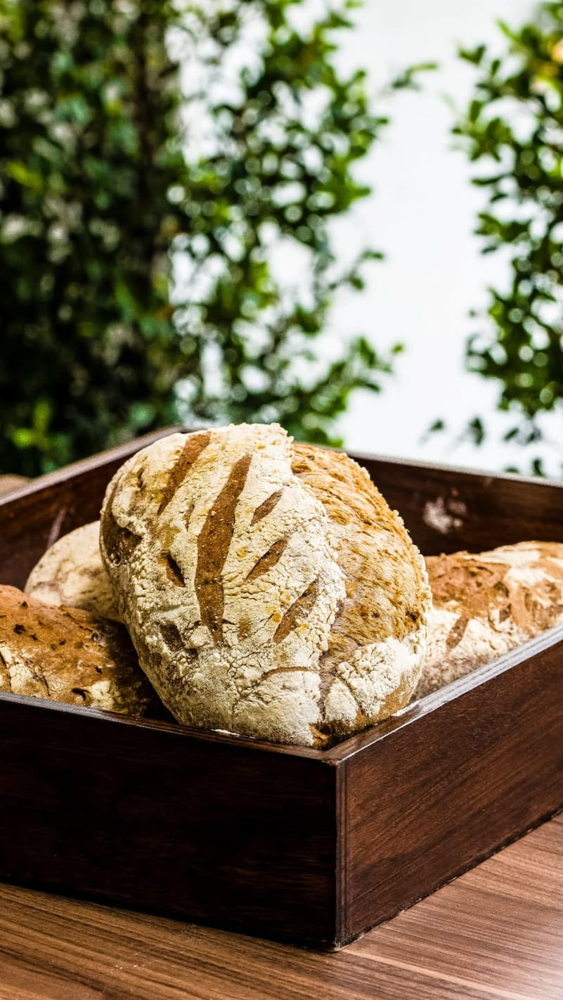
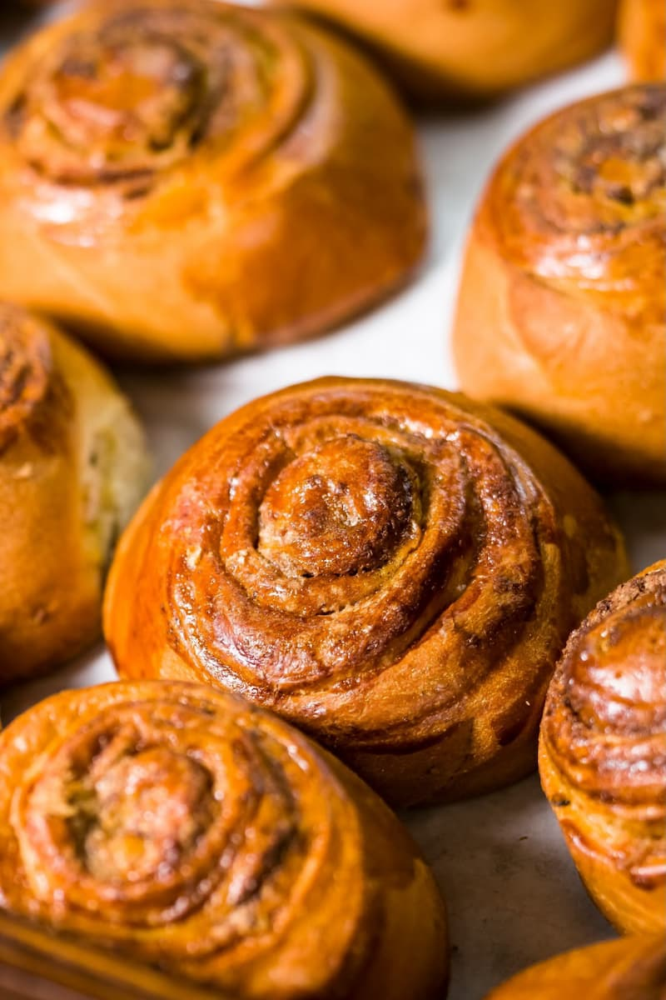

Pan de masa madre clásico
Corteza crujiente, miga alveolada, fermentado 24 horas con nuestro cultivo propio.
$1.65
Horno de leña · Ingredientes 100% naturales
En Di'Aroma Bakery amasamos y horneamos cada pieza a mano, todos los días, para que tu mesa tenga siempre el sabor de lo recién hecho.
Nuestra historia
Di'Aroma Bakery nació de una receta familiar y de la idea simple de que el buen pan necesita tiempo, no atajos. Fermentamos nuestras masas lentamente, seleccionamos harinas de calidad y horneamos en tandas pequeñas para que cada producto salga en su punto exacto.
Hoy seguimos ese mismo principio: menos ingredientes artificiales, más oficio, y un mostrador que huele a recién horneado desde temprano.
Cómo lo hacemos
Elegimos harinas, mantequilla y frutas de proveedores locales de confianza.
Cada masa se trabaja a mano, respetando sus propios tiempos de fermentación.
Horneamos en tandas pequeñas para asegurar corteza y miga perfectas.
Servimos recién salido del horno, a lo largo de todo el día.
Un vistazo

Lo que dicen
Visítanos